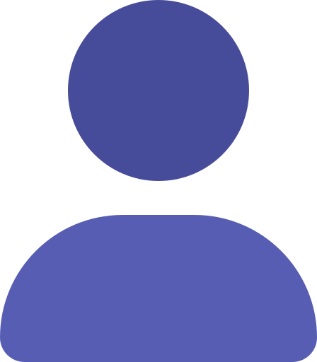
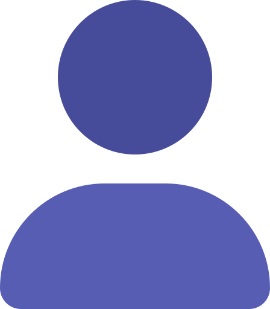

{{category.category}}
{{category.caption}}
{{category.posted}}
{{category.user.username}}
{{category.category}}
{{category.caption}}
{{category.posted}}
{{category.user.username}}
{{ comment.caption }}
{{comment.user.username}}
No comments found.
{%endif%}